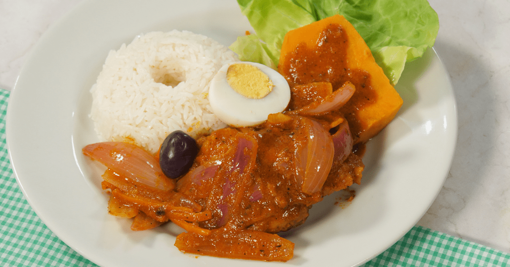

Estofado de Pollo con Arroz Blanco
Ingredientes
- 4 presas de pollo (piernas/muslos)
- Sal y pimienta al gusto
- Aceite vegetal
- 1 cebolla picada
- 2 dientes de ajo
- 1 tomate picado
- ½ taza de zanahoria en rodajas
- 1 taza de alverjitas
- ½ taza de pasas (opcional)
- 1 cda de pasta de ají panca
- 1 cda de ají amarillo
- 2 tazas de caldo de pollo
- 2 papas blancas en cubos
- 1 hoja de laurel
- Culantro o perejil picado al final
¡A PREPARAR!
1. Sellar el pollo
- Sazona, dora en aceite y retira. Reserva.
2. Hacer el aderezo
- En la misma olla, sofríe ajo, cebolla, ají panca, ají amarillo, tomate y laurel.
3. Cocer todo
- Regresa el pollo, añade caldo, zanahoria, alverjitas, pasas y papas. Cocina a fuego medio bajo hasta que todo esté tierno (15‑20 min).
4. Servir
- Espolvorea culantro y sirve caliente con arroz blanco.